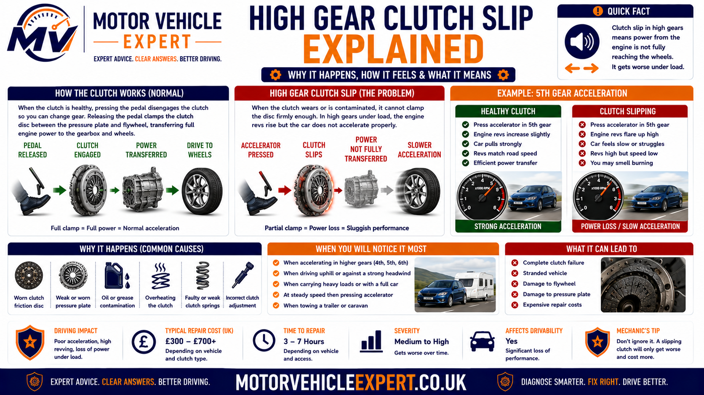
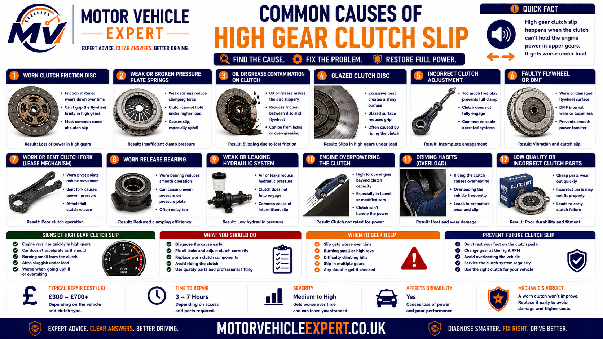
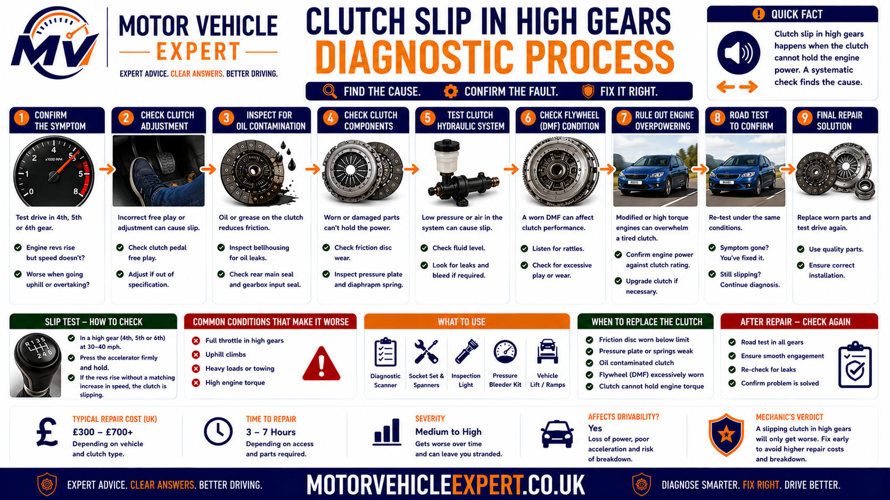
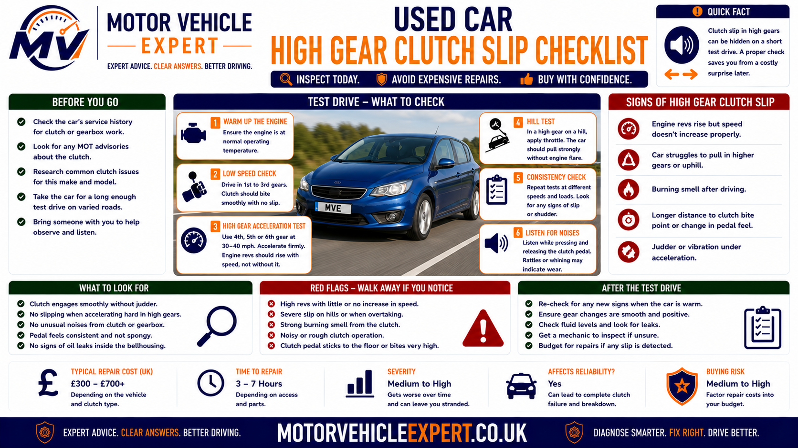

Use the Diagnostic App for High-Gear Clutch Slip
Slow acceleration in a high gear does not automatically prove the clutch is slipping. Engine, turbocharger, fuelling, transmission and drivetrain faults can create similar complaints. Use the Motor Vehicle Expert diagnostic app to organise the symptom before expensive clutch or gearbox work is authorised.
1. Record the Selected Gear
Note whether the symptom appears in fourth, fifth, sixth or several high gears.
2. Compare Revs and Speed
Record whether engine RPM rises faster than road speed under acceleration.
3. Identify the Load
Note gradient, engine speed, throttle position, passengers, luggage and towing load.
4. Record Related Clues
Include bite-point position, burning smell, pedal return, fluid leakage and recent clutch work.
Genuine clutch slip allows engine speed to rise independently of road speed. Engine power loss normally prevents the engine from producing that strong rise in revs under load.
Why Does the Clutch Slip in High Gears?
High gears expose clutch slip because the driver often asks the clutch to transfer substantial engine torque while the vehicle is already travelling quickly and the engine is operating at relatively low or medium RPM.
A healthy clutch locks the flywheel, friction plate and gearbox input shaft together. A worn, contaminated or weakly clamped clutch cannot maintain that connection under heavy load, so engine revs rise while road speed increases slowly.
Revs Flare in Fourth Gear
Early clutch wear may appear during firm acceleration before lower gears show obvious slip.
Slip in Fifth or Sixth
Tall gearing and strong throttle demand can exceed the clutch's remaining torque capacity.
Worse Uphill or Overtaking
Gradient and rapid acceleration increase the load placed on the clutch.
Burning Smell Afterwards
Repeated slip converts engine power into heat at the friction surfaces.
Typical Evidence
- ✓ Engine revs rise quickly under throttle.
- ✓ Road speed does not rise at the same rate.
- ✓ Fourth, fifth or sixth gear exposes the fault.
- ✓ Uphill acceleration makes it worse.
- ✓ Reducing throttle allows the clutch to regain grip.
- ✓ A hot clutch smell may appear afterwards.
Typical Evidence
- ✓ Engine revs struggle to increase under load.
- ✓ Hesitation, stuttering or misfire is present.
- ✓ Turbocharger boost feels weak or absent.
- ✓ An engine warning light is illuminated.
- ✓ The fault occurs without independent rev flare.
- ✓ No clutch smell or bite-point change is present.
| Observed behaviour | Likely interpretation | Recommended response |
|---|---|---|
| Revs and road speed rise together | Normal clutch torque transfer | Investigate other causes of poor performance |
| Revs flare briefly in fourth gear | Early load-related clutch slip | Arrange prompt diagnosis |
| Revs flare in fifth or sixth during overtaking | Reduced clutch torque capacity | Avoid heavy acceleration and plan repair |
| Slip appears mainly uphill | Gradient exposes marginal clutch grip | Stop repeated hill testing |
| Revs struggle to rise and engine hesitates | Engine power loss more likely | Diagnose engine, turbo, fuel and exhaust systems |
| Severe flare, smell or intermittent drive | Advanced clutch failure | Stop driving and arrange recovery |
The clutch should maintain a fixed relationship between engine RPM and road speed once the pedal is fully released. A sudden RPM increase without a matching speed increase is the strongest initial sign of genuine clutch slip.
One clear rev flare is enough to stop the test. Repeated high-load acceleration can overheat the friction plate, pressure plate and flywheel and turn early slip into sudden loss of drive.
Is Clutch Slip in High Gears Serious?
Yes. Slip in fourth, fifth or sixth gear is often an early sign that the clutch can no longer transfer the engine's full torque. Lower gears may still feel normal because the vehicle accelerates more easily and the high-load condition lasts for less time.
Once the clutch begins slipping, engine power is converted into friction heat instead of road speed. Repeated high-load acceleration can glaze the friction plate, weaken pressure-plate performance and damage the flywheel surface.
Brief Flare in Sixth Gear
Early WarningA short RPM increase during firm acceleration may be the first sign that the clutch's torque capacity is reducing.
Slip in Several High Gears
Significant WearSlip affecting fourth, fifth and sixth gear suggests that the fault is progressing beyond one extreme load condition.
Slip During Overtaking
Driving-Safety RiskThe vehicle may not produce the acceleration expected when joining traffic or completing an overtaking manoeuvre.
Burning Smell or Loss of Drive
UrgentStrong heat, smoke or intermittent drive indicates severe friction loss and possible flywheel damage.
Early Warning Signs
- ✓ Revs flare briefly during high-gear acceleration.
- ✓ Lower gears still appear normal.
- ✓ The fault is worse from low or medium RPM.
- ✓ A gradient makes the symptom easier to reproduce.
- ✓ Reducing throttle allows the clutch to grip again.
- ✓ The bite point has gradually moved higher.
Urgent Warning Signs
- ! Revs rise dramatically with very little acceleration.
- ! Slip appears during normal gentle driving.
- ! A strong burning smell continues after stopping.
- ! Smoke appears near the engine-and-gearbox joint.
- ! Drive becomes intermittent.
- ! The vehicle cannot climb a normal gradient.
- ! The clutch begins slipping during pull-away.
Once the friction surfaces have lost sufficient grip to slip under load, continued use normally creates more heat and wear. The symptom may eventually appear in lower gears and during ordinary acceleration.
Why Do High Gears Expose Clutch Slip First?
High gears are designed to reduce engine speed during faster road driving. When the driver accelerates firmly without changing down, the engine must produce substantial torque while the selected gear offers relatively little mechanical multiplication.
The clutch must hold that engine torque without allowing movement between the flywheel, friction plate and pressure plate. A marginal clutch may manage gentle driving but slip when the driver requests strong acceleration in a tall gear.
1. A High Gear Is Selected
Fourth, fifth or sixth gear keeps engine RPM relatively low for the vehicle's road speed.
2. The Driver Applies Throttle
The engine begins producing greater torque to accelerate the vehicle.
3. Clutch Load Increases
The friction surfaces must transfer the additional torque into the gearbox input shaft.
4. Remaining Grip Is Exceeded
Wear, contamination or weak clamping force allows relative movement between the clutch surfaces.
5. Engine RPM Flares
The flywheel rotates faster than the clutch plate and gearbox input shaft.
6. Road Speed Lags
The vehicle does not receive all the torque the engine is producing.
7. Friction Heat Builds
Relative movement converts useful engine power into unwanted heat.
8. Grip May Return
Reducing throttle lowers torque demand and can allow the clutch to reconnect temporarily.
| Driving condition | Clutch load | Likely result with early wear |
|---|---|---|
| Gentle acceleration in first gear | Short-duration load with strong gear multiplication | Clutch may appear normal |
| Normal town driving in second or third | Moderate load | Early slip may remain hidden |
| Firm acceleration in fourth | High torque demand | Brief rev flare may appear |
| Full-throttle acceleration in fifth or sixth | Very high load at a tall ratio | Marginal clutch grip is exposed |
| High gear on an incline | Gear load combined with gradient resistance | Slip becomes easier to trigger |
| High gear with passengers or trailer | Additional mass increases required torque | Slip and heat can develop rapidly |
A vehicle can still pull away normally while the clutch has already lost enough torque capacity to slip during high-load acceleration.
How High-Gear Clutch Slip Happens
Once the clutch pedal is fully released, the clutch should behave like a solid mechanical connection. Engine RPM and road speed should maintain a predictable relationship for the selected gear.

The engine RPM flare occurs because the flywheel accelerates faster than the clutch plate and gearbox input shaft.
Healthy Friction Plate
Adequate friction material transfers engine torque without relative movement.
Healthy Pressure Plate
The diaphragm spring maintains sufficient clamping force against the flywheel.
Correct Release Position
The bearing and release mechanism return fully when the pedal is released.
Worn Friction Material
Reduced friction capacity allows the clutch surfaces to move at different speeds.
Weak Clamping Force
Pressure-plate wear or heat damage reduces the force holding the clutch together.
Oil-Contaminated Surfaces
Engine or gearbox oil lowers friction between the clutch plate, flywheel and pressure plate.
Partial Release Pressure
Hydraulic or adjustment faults can prevent the clutch from clamping completely.
Flywheel Heat Damage
Hot spots and surface distortion can reduce consistent clutch engagement.
Torque Becomes Heat
Slipping friction surfaces absorb engine energy and may create a burning smell.
Expected Behaviour
- ✓ Engine RPM rises smoothly.
- ✓ Road speed rises at the corresponding rate.
- ✓ No sudden rev flare occurs.
- ✓ Acceleration remains predictable.
- ✓ No burning smell develops.
- ✓ The result remains consistent hot and cold.
Abnormal Behaviour
- ! Engine RPM jumps suddenly.
- ! Road speed responds slowly.
- ! Acceleration feels briefly disconnected.
- ! Reducing throttle restores grip.
- ! The symptom becomes worse with heat.
- ! A burning clutch smell appears.
Each confirmed slip event adds heat and can alter the clutch condition. Once a clear RPM flare has been observed, continue diagnosis through external checks and workshop inspection.
Clutch-Slip Patterns in Fourth, Fifth and Sixth Gear
The first gear in which slip becomes noticeable depends on engine torque, gearbox ratios, vehicle weight, road gradient and the remaining condition of the clutch.
Fourth-Gear Slip
Often appears during stronger acceleration at moderate road speed and may indicate that wear is becoming easier to expose.
Fifth-Gear Slip
Common during motorway joining, overtaking or accelerating up a gradient.
Sixth-Gear Slip
May be the earliest pattern where a tall cruising gear is asked to deliver substantial acceleration.
Slip in One Gear Only
The selected ratio and test condition may simply create the highest load; the clutch itself is not gear-specific.
Slip in Several Gears
The clutch's remaining torque capacity is reducing and the fault is progressing.
Slip Reaches Third Gear
More advanced wear, contamination or pressure-plate weakness is likely.
Slip During Pull-Away
Severe clutch failure or extensive overheating may be present.
Only Slips at Low RPM
Strong low-speed engine torque and high gearing may expose the weakness.
Only Slips When Hot
Friction coefficient, pressure-plate performance or hydraulic return may change with temperature.
| Observed gear pattern | Likely interpretation | Diagnostic priority |
|---|---|---|
| Slip only in sixth under full load | Very early or marginal torque-capacity loss | Confirm gently and inspect release condition |
| Slip in fifth and sixth | Developing clutch wear or contamination | Arrange workshop diagnosis |
| Slip in fourth, fifth and sixth | Clear high-load clutch failure | Plan repair and avoid hard acceleration |
| Slip reaches third gear | Advanced reduction in clutch grip | Limit driving and organise urgent repair |
| Slip during pull-away | Severe clutch failure | Stop driving and recover |
| Engine struggles without rev flare | Engine power fault more likely | Diagnose engine performance |
A symptom that appears in one gear usually reflects the load created by that ratio and driving condition, not a clutch fault limited to one gearbox gear.
Why Does the Clutch Slip in Fourth Gear?
Fourth gear often combines moderate road speed with enough engine torque to expose a weakened clutch. Slip may occur while accelerating from a bend, joining a faster road or climbing a gradient.
Moderate-Speed Acceleration
The driver applies substantial throttle without selecting a lower gear.
Strong Mid-Range Torque
Turbocharged petrol and diesel engines may produce peak torque in the RPM range commonly used in fourth.
Gradient Load
A mild hill can add enough resistance to trigger a brief flare.
Overtaking From Fourth
A sudden throttle demand may exceed the clutch's available grip.
Slip Becomes More Frequent
Once fourth-gear slip develops, lower-load situations may soon begin exposing the fault.
Heat Builds Quickly
Repeated acceleration tests can worsen the clutch during one journey.
Arrange diagnosis promptly, particularly if the symptom also occurs uphill, when hot or during ordinary acceleration.
Why Does the Clutch Slip in Fifth Gear?
Fifth gear is commonly used for faster-road acceleration and may expose clutch wear during motorway joining, overtaking or hill climbing.
Motorway Joining
Strong throttle is used to raise road speed while the clutch carries substantial engine torque.
Overtaking Without Changing Down
Remaining in fifth increases clutch load and reduces available wheel acceleration.
Long Gradients
Sustained load can heat the clutch even where each individual slip event feels brief.
Mid-Range Turbo Torque
Boost can produce a rapid torque rise that exposes reduced pressure-plate or friction capacity.
Heavy Vehicle Load
Passengers, luggage or towing increase the torque required.
Hot Motorway Clutch
Heat may reduce grip further after repeated traffic, joining and acceleration.
Avoid relying on full-throttle acceleration until the fault has been diagnosed. Change down where necessary and do not attempt risky manoeuvres to reproduce the symptom.
Why Does the Clutch Slip in Sixth Gear?
Sixth gear is normally designed for efficient cruising rather than strong acceleration from low RPM. Demanding full engine torque without changing down can expose a marginal clutch before any lower-gear symptoms become obvious.
Tall Cruising Ratio
Engine speed remains low relative to road speed.
Full Throttle at Low RPM
High engine load creates substantial torque demand through the clutch.
Motorway Inclines
Gradient resistance can expose slip while maintaining cruising speed.
Early Clutch Wear
A brief sixth-gear flare may appear before other everyday symptoms.
Downshifting Prevents the Symptom
Selecting a lower gear reduces the load condition, but does not repair the clutch.
Repeated Testing Causes Heat
Long high-speed slip events can damage the clutch and flywheel quickly.
Downshifting can be normal driving technique. However, a clear independent rise in RPM while the pedal is fully released still indicates lost torque transfer.
Why Does the Clutch Slip During Low-RPM Acceleration?
Accelerating strongly from low engine speed in a high gear creates a demanding combination of high throttle, strong cylinder pressure and limited mechanical advantage at the wheels.
High Throttle Demand
The driver requests substantial engine torque without changing gear.
Turbo Boost Builds
Mid-range torque can rise rapidly as the turbocharger produces boost.
Clutch Grip Is Tested
The friction surfaces must hold the entire torque increase.
Engine Lugging
Very low RPM can also create vibration and poor response without genuine clutch slip.
Rev Flare Confirms Slip
The RPM must rise independently of road speed for clutch slip to be supported.
Downshift Reduces Load
A lower gear improves mechanical advantage and may prevent the immediate flare.
| Low-RPM symptom | Likely meaning | Diagnostic clue |
|---|---|---|
| Revs flare upward | Clutch loses grip | Road speed lags behind RPM |
| Engine vibrates and revs remain low | Engine lugging | Downshifting restores smooth response |
| Engine hesitates or stutters | Fuel, ignition or boost fault possible | No clean independent rev flare |
| Traction warning flashes | Wheel slip or traction-control intervention | Check road surface and driven-wheel grip |
| Automatic gearbox changes ratio | Transmission operation rather than manual clutch slip | Identify gearbox design and scan transmission data |
Use appropriate gears during normal driving, but arrange diagnosis if high-load RPM flare has already been confirmed.
Clutch Slip During Overtaking
Overtaking commonly combines a high gear, strong throttle and the need for immediate predictable acceleration. Clutch slip can make the engine sound powerful while the vehicle fails to gain speed as expected.
Unexpected Rev Flare
Engine RPM rises suddenly as the driver commits to the manoeuvre.
Delayed Road-Speed Increase
The vehicle takes longer to pass despite substantial throttle.
Throttle Reduction Restores Grip
Lifting the accelerator can reconnect the clutch but removes the requested acceleration.
Fifth or Sixth Gear Selected
A tall ratio may create more clutch load than changing down.
Burning Smell Afterwards
A longer acceleration event can create significant friction heat.
Repeat Event Becomes Easier
Heat from the first slip can reduce grip during the next acceleration.
Unpredictable acceleration creates a direct safety risk. Use a controlled workshop assessment and avoid situations that depend on full drivetrain performance.
Clutch Slip During Motorway Acceleration
Motorway driving can expose high-gear clutch slip while joining, accelerating up a long incline or increasing speed to pass slower traffic.
Slip on the Joining Road
Strong acceleration in fourth or fifth can cause RPM flare.
Slip on Long Inclines
Sustained load can expose a clutch that holds briefly on level roads.
Slip After Traffic
A clutch already heated by stop-start use may lose grip more easily.
Cruising Remains Normal
Maintaining steady speed requires less torque than acceleration, so the fault may disappear at constant throttle.
Downshift Masks the Flare
A lower gear can reduce immediate clutch load but does not restore worn friction capacity.
Heat Damage Accumulates
Long-duration slip at faster road speed can damage the flywheel and pressure plate.
Avoid the outside lane, hard acceleration and further testing. Arrange inspection before the vehicle is required to accelerate under load again.
Why Does the Clutch Slip Uphill in High Gear?
A gradient increases the force required to maintain road speed. Remaining in a high gear while applying more throttle places a strong and sustained torque demand on the clutch.
Road Resistance Increases
Gravity opposes the vehicle's forward movement.
Throttle Demand Rises
The engine produces more torque to maintain or increase speed.
High Gear Raises Clutch Load
Limited mechanical advantage means the clutch must transfer substantial torque.
Revs Rise, Speed Falls
The engine may accelerate while the vehicle slows on the hill.
Downshift Restores Acceleration
A lower gear reduces the immediate torque demand on the clutch.
Burning Smell Develops
Sustained slip creates more heat than a brief level-road flare.
Typical Pattern
- ✓ Engine RPM rises rapidly.
- ✓ Road speed rises slowly or falls.
- ✓ Reducing throttle reconnects the clutch.
- ✓ High gear makes the symptom worse.
- ✓ A clutch smell may follow the climb.
Typical Pattern
- ✓ Engine RPM cannot rise strongly.
- ✓ Hesitation, stuttering or misfire occurs.
- ✓ Turbocharger boost feels weak.
- ✓ An engine warning light may appear.
- ✓ No independent rev flare occurs.
One clear RPM flare is sufficient. Continued hill testing can overheat the clutch and leave the vehicle unable to complete the climb safely.
High-Gear Clutch Slip When Hot vs Cold
Temperature can change friction performance, pressure-plate behaviour, flywheel condition and hydraulic return. A clutch that holds when cold but slips after traffic or motorway driving is still faulty.
Holds When Cold
Cooler friction surfaces may provide enough grip during the first journey.
Slips After Traffic
Repeated pull-away and pedal use increase clutch and release- system temperature.
Slips After Motorway Load
Sustained high-gear acceleration can heat already marginal friction surfaces.
Hot Pressure-Plate Weakness
Heat distortion or weakened diaphragm performance may reduce clamping force.
Hydraulic Pressure Retention
Restricted compensation or hose faults may prevent complete release-system return as temperature rises.
Glazed Friction Surfaces
Previous overheating can create smooth surfaces that lose grip more easily when hot.
Oil Contamination Changes With Heat
Oil may spread across the friction surfaces as the drivetrain warms.
Burning Smell Appears
Repeated slip raises friction temperature enough to create a sharp hot smell.
Cooling Temporarily Improves Grip
Temporary improvement after cooling does not mean the clutch has repaired itself.
| Temperature pattern | Possible cause | Recommended check |
|---|---|---|
| Slips cold and hot | Advanced wear, contamination or weak clamping | Plan prompt clutch inspection |
| Slips mainly when hot | Heat-related friction or pressure-plate loss | Repeat controlled checks after normal warming |
| Slip follows repeated pedal use | Hydraulic return or release-system preload possible | Check pedal return and residual release pressure |
| Slip improves after cooling | Temporary recovery of friction capacity | Do not treat cooling as a repair |
| Burning smell remains after stopping | Significant clutch overheating | Stop driving and allow professional inspection |
Continued high-load use can glaze the clutch, damage the flywheel and reduce the remaining ability to transfer drive.
How to Compare Engine Revs With Road Speed
In a fully engaged manual gear, engine RPM and road speed should remain mechanically linked. The precise RPM at a given speed differs between vehicles, but it should not jump suddenly unless road speed also changes or the driven tyres lose traction.
Normal Acceleration
Engine RPM and road speed rise together in a smooth, proportional pattern.
Brief Rev Flare
RPM jumps before the clutch regains grip and road speed catches up.
Sustained Slip
RPM remains high while acceleration stays weak.
Engine Power Loss
RPM and road speed both rise slowly because the engine cannot produce expected torque.
Wheel Spin
RPM rises while driven-wheel speed increases, often with traction-control activity.
Automatic Ratio Change
RPM can change normally when an automatic transmission changes ratio or torque-converter state.
| RPM and speed behaviour | Likely condition | Supporting clue |
|---|---|---|
| RPM and speed rise together | Normal clutch connection | No burning smell or independent flare |
| RPM rises first, speed follows late | Clutch slip | Worse in high gears or uphill |
| RPM rises but speed barely changes | Severe clutch slip | Heat, smell or intermittent drive may follow |
| RPM cannot rise under load | Engine power loss | Hesitation, misfire or boost loss may be present |
| RPM rises with traction warning | Tyre spin or traction intervention | Road surface or tyre grip issue |
Once RPM has risen independently of road speed in a fully engaged manual gear, stop applying heavy load and proceed to workshop diagnosis.
High-Gear Clutch Slip vs Engine Power Loss
Both faults can make a vehicle slow in high gears. The key difference is whether the engine can raise its speed freely while the vehicle fails to accelerate.
More Likely When
- ✓ Engine RPM flares quickly.
- ✓ Road speed lags behind.
- ✓ Fourth, fifth or sixth gear exposes the fault.
- ✓ Reducing throttle restores grip.
- ✓ A burning clutch smell may develop.
- ✓ Engine operation remains otherwise smooth.
More Likely When
- ✓ RPM struggles to increase.
- ✓ The engine hesitates or stutters.
- ✓ Misfire or warning lights are present.
- ✓ Turbocharger boost feels absent.
- ✓ Fuel or exhaust restriction symptoms exist.
- ✓ No clutch-related smell or bite-point change is present.
| Diagnostic clue | Clutch-slip pattern | Engine-fault pattern |
|---|---|---|
| Engine RPM | Rises freely or flares | Struggles to rise |
| Road-speed response | Delayed relative to RPM | Matches limited engine output |
| Engine smoothness | Often smooth | May hesitate, misfire or surge |
| Warning lights | Often absent | May be present |
| Smell | Possible burning friction smell | Not normally a clutch smell |
| Primary inspection | Clutch, release system, leakage and flywheel | Fuel, ignition, air, turbo and exhaust systems |
Confirm the RPM-to-road-speed separation before approving clutch replacement.
Common Causes of Clutch Slip in High Gears
High-gear clutch slip develops when the clutch cannot transfer the torque requested by the engine. The fault may be caused by worn friction material, reduced pressure-plate clamping force, contamination, flywheel damage or a release system that prevents complete clutch engagement.
The clutch should not be replaced until external pedal, cable and hydraulic faults have been considered. However, clear rev flare under load commonly indicates that the internal friction assembly has lost torque capacity.

The most likely cause depends on clutch mileage, bite-point position, leakage, recent repairs, temperature and whether the pedal and release mechanism return fully.
Worn Friction Plate
Reduced friction material and surface condition lower the clutch's ability to transmit engine torque.
Glazed Clutch Surface
Previous overheating creates smooth friction surfaces that lose grip under load.
Weak Pressure Plate
Reduced diaphragm-spring force prevents the clutch from being clamped firmly enough.
Heat-Distorted Pressure Plate
Uneven or distorted surfaces reduce consistent contact across the clutch plate.
Engine-Oil Contamination
A leaking rear crankshaft seal can spread engine oil across the flywheel and friction plate.
Gearbox-Oil Contamination
An input-shaft seal leak can contaminate the clutch from the gearbox side.
Dual-Mass Flywheel Wear
Excess movement, heat damage or surface irregularity can affect clutch grip and engagement.
Solid Flywheel Damage
Scoring, hot spots or distortion can prevent even clutch contact.
Hydraulic Pressure Retention
Residual pressure can leave the release bearing partly loaded and reduce clutch clamping force.
Master-Cylinder Compensation Fault
Fluid may not return correctly when the pedal is released, particularly as temperature rises.
Restricted Hydraulic Hose
Internal hose damage can trap pressure in the slave cylinder or concentric release unit.
Binding Slave Cylinder
A slow or sticking piston can prevent the release mechanism returning completely.
Incorrect Cable Adjustment
Insufficient free play can leave a cable-operated clutch partly released.
Seized Cable or Adjuster
Poor return movement can maintain unwanted pressure on the release fork.
Pedal Not Returning Fully
Pedal bushes, springs or linkage faults can prevent complete clutch engagement.
Release Bearing Held Under Load
Incorrect geometry or adjustment can maintain pressure against the diaphragm fingers.
Incorrect Clutch Kit
An incompatible friction plate, pressure plate or release bearing can reduce clamping or alter release travel.
Installation Error
Incorrect orientation, alignment or tightening can cause early slip after replacement.
Excessive Engine Torque
Engine tuning can exceed the torque rating of a standard or already worn clutch.
Repeated Heavy Towing
High vehicle load and hill starts accelerate friction and flywheel wear.
Driver-Induced Overheating
Riding the clutch or holding the vehicle on the bite point can glaze and weaken the friction surfaces.
| Supporting symptom | Stronger fault direction | Required inspection |
|---|---|---|
| Gradual high bite point and increasing slip | Friction-plate wear | Clutch thickness and complete kit condition |
| Slip after repeated heat but normal fluid level | Glazing or weak pressure plate | Friction surfaces, diaphragm force and flywheel |
| Slip with oil around the bellhousing | Rear crankshaft or gearbox input-seal leak | Leak source and clutch contamination |
| Slip becomes worse after repeated pedal use | Hydraulic pressure retention | Master cylinder, hose, slave and pedal return |
| Slip after cable adjustment or replacement | Incorrect free play or cable routing | Cable specification and release-arm position |
| Slip immediately after clutch replacement | Incorrect parts, installation or unresolved flywheel fault | Invoice, part numbers and repair procedure |
| Slip after engine remapping | Clutch torque capacity exceeded | Measured engine output and clutch rating |
A worn clutch needs internal replacement. A hydraulic, cable or pedal fault may reduce clamping without the friction plate being the original cause, although prolonged partial release can also damage the clutch.
Worn Clutch Friction Plate and High-Gear Slip
Friction-plate wear is one of the most common causes of high-gear clutch slip. As usable material and surface grip reduce, the clutch can no longer transfer peak engine torque without relative movement.
Mileage alone cannot confirm clutch condition. Driving style, towing, traffic, hill starts, vehicle weight and previous overheating can wear one clutch much sooner than another.
Reduced Friction Thickness
Wear reduces the effective condition and operating margin of the clutch plate.
Worn Friction Surface
Material may become smooth, polished or heat affected.
High Bite Point
A rising bite point can accompany wear, although pedal position varies by design.
Progressive Rev Flare
Slip normally begins in demanding conditions and gradually appears under lighter load.
Burning Smell
Repeated friction creates a sharp hot smell after acceleration.
Reduced Hill Performance
The vehicle loses effective drive despite increased engine speed.
Slip Becomes Heat Sensitive
A worn plate may hold briefly when cold and slip more when hot.
Lower Gears Eventually Affected
Advanced wear can produce slip in third gear or during pull-away.
Flywheel Damage Risk
Prolonged slip can create scoring, hot spots and surface distortion.
Supporting Evidence
- ✓ Slip has developed gradually.
- ✓ The bite point is higher than before.
- ✓ Fourth, fifth and sixth gear are affected.
- ✓ The symptom is worse uphill and when hot.
- ✓ A burning smell follows acceleration.
- ✓ No hydraulic or cable fault is found.
Alternative Evidence
- ! Slip began suddenly after a fluid leak.
- ! Pedal return is slow or incomplete.
- ! The fault followed cable adjustment.
- ! Slip began immediately after clutch replacement.
- ! Engine or gearbox oil is visible.
- ! The vehicle has recently been remapped.
The pressure plate and release component share the same labour access and may have experienced the same mileage and heat. Inspect the flywheel before fitting new clutch parts.
Can a Weak Pressure Plate Cause High-Gear Clutch Slip?
Yes. The pressure plate supplies the clamping force that locks the friction plate against the flywheel. If diaphragm-spring force reduces, the clutch can slip even where some friction material remains.
Weak Diaphragm Spring
Age, fatigue or heat reduces the force applied to the clutch plate.
Heat-Distorted Pressure Plate
Uneven contact prevents the full surface from carrying torque.
Damaged Diaphragm Fingers
Worn or uneven fingers can alter pressure-plate release and clamping geometry.
Broken Cover Straps
Structural damage can prevent correct pressure-plate movement.
Incorrect Cover Height
An incompatible pressure plate can provide incorrect operating force or release travel.
Incorrect Bolt Tightening
Uneven or incorrect installation can distort the clutch cover.
Over-Travel Damage
Excess release movement can push the diaphragm beyond its intended range.
Continuous Release Load
Hydraulic or adjustment faults can keep the diaphragm partly depressed.
Surface Hot Spots
Localised heat reduces even contact and promotes further slip.
| Pressure-plate clue | Possible meaning | Required confirmation |
|---|---|---|
| Slip under high torque despite moderate clutch mileage | Reduced clamping force | Inspect diaphragm and pressure-plate condition |
| Slip and pedal vibration | Distorted plate or uneven diaphragm fingers | Inspect cover geometry and flywheel surface |
| Slip followed severe overheating | Heat-weakened pressure plate | Check distortion, colour and hot spots |
| Slip began after replacement | Incorrect cover, installation or release geometry | Confirm part numbers and fitting procedure |
| Slip changes after repeated pedal use | Residual release pressure possible | Check hydraulic return before dismantling |
A plate with remaining friction material can still slip if the pressure plate cannot clamp it firmly enough against the flywheel.
Oil-Contaminated Clutch Slip in High Gears
Engine oil or gearbox oil on the clutch surfaces lowers friction and can create high-gear slip even when the clutch plate has not reached its normal wear limit.
Contamination repair must include both the leak and the affected friction components. Cleaning an oil-soaked clutch plate is not normally a dependable long-term repair.
Rear Crankshaft Seal
Engine oil can enter the bellhousing from behind the flywheel.
Gearbox Input-Shaft Seal
Transmission oil can spread from the gearbox input area.
Concentric Slave-Cylinder Leak
Hydraulic fluid can contaminate the clutch from inside the bellhousing.
Oil-Soaked Friction Plate
Porous friction material absorbs fluid and loses predictable grip.
Contaminated Pressure Plate
Oil reduces friction and can spread across the working surface.
Contaminated Flywheel
Oil and heat can affect the full clutch contact area.
Intermittent Early Slip
Contamination may produce variable grip before becoming constant.
Judder and Slip Together
Uneven contamination can cause both poor grip and irregular engagement.
Bellhousing Oil Evidence
Fluid near the engine-and-gearbox joint supports internal leakage but must be identified correctly.
Likely Direction
- ✓ Oil comes from the engine side.
- ✓ Engine-oil level may fall.
- ✓ Rear crankshaft seal area is wet.
- ✓ Oil colour and smell match engine lubricant.
- ✓ Flywheel-side contamination is likely.
Likely Direction
- ✓ Fluid comes from the gearbox side.
- ✓ Gearbox-oil level may fall.
- ✓ Input-shaft seal leakage is present.
- ✓ Hydraulic fluid may accompany pressure loss.
- ✓ Clutch-disc contamination remains likely.
A new friction plate can be contaminated quickly if the rear crankshaft seal, gearbox input seal or concentric slave cylinder remains defective.
Can Flywheel Faults Cause High-Gear Clutch Slip?
The flywheel provides one of the clutch's main friction surfaces. Scoring, hot spots, distortion and excessive dual-mass movement can prevent consistent torque transfer and damage a replacement clutch.
Flywheel Hot Spots
Localised overheating creates hard, uneven areas with altered friction.
Scored Surface
Deep grooves reduce uniform contact with the friction plate.
Surface Distortion
An uneven face prevents full clutch contact.
Excess Dual-Mass Rotation
Internal wear can create abnormal movement between flywheel sections.
Excess Rocking Movement
Worn internal bearings can affect alignment and clutch engagement.
Damaged Internal Springs
Torsional control can deteriorate and create rattle or harsh engagement.
Grease Leakage
Internal dual-mass flywheel lubricant may escape after failure.
Previous Clutch Overheating
Severe slip can damage the flywheel even if it was serviceable before the clutch fault.
Incorrect Flywheel Reuse
Fitting a new clutch against a damaged surface can cause repeat slip or judder.
| Flywheel finding | Possible effect | Repair decision |
|---|---|---|
| Minor acceptable surface marks | May remain serviceable | Follow manufacturer inspection limits |
| Deep scoring or heavy hot spots | Reduced and uneven clutch contact | Replace or machine only where approved |
| Excess dual-mass rotational movement | Poor torque control and possible repeat damage | Replace the flywheel |
| Excess rocking or bearing play | Misalignment and vibration | Replace the flywheel |
| Grease leakage or internal noise | Dual-mass failure | Replace before clutch refitting |
| Evidence unclear | Uncertain repeat-failure risk | Request measurements and visual evidence |
Ask for the measured movement, surface condition and manufacturer limits. Do not reuse a clearly failed flywheel simply to reduce the immediate quotation.
Can Hydraulic Preload Cause High-Gear Clutch Slip?
Yes. The hydraulic system should release all pressure from the clutch mechanism when the pedal returns. If pressure remains, the release bearing can hold the pressure plate partly disengaged and reduce clutch grip.
Blocked Compensation Port
Fluid cannot return fully to the reservoir after the pedal is released.
Master-Cylinder Pushrod Misadjustment
The piston may not return far enough to uncover the compensation port.
Restricted Flexible Hose
Internal damage can allow pressure towards the slave cylinder but restrict its return.
Binding Slave Cylinder
Piston corrosion or seal damage can delay release-system return.
Concentric Slave Fault
An internal hydraulic bearing can remain partly extended.
Pedal Not Fully Returning
A spring, bush, floor mat or pedal-box fault can hold the master-cylinder piston forward.
Incorrect Fluid
Seal swelling or poor hydraulic response may follow use of an unsuitable fluid.
Heat-Related Pressure Increase
Restricted fluid compensation may make slip worse as the system warms.
Release Bearing Continuously Loaded
Residual hydraulic travel reduces pressure-plate clamping force.
Supporting Evidence
- ✓ Slip becomes worse after repeated pedal use.
- ✓ The pedal does not return completely.
- ✓ Bite-point position changes during the journey.
- ✓ Opening a bleed point releases trapped pressure.
- ✓ Recent master or slave-cylinder work was completed.
- ✓ The fault is significantly temperature dependent.
Alternative Evidence
- ! Pedal return and free movement are normal.
- ! No residual hydraulic pressure is present.
- ! Slip has developed gradually over high mileage.
- ! High bite point and burning smell are present.
- ! Fourth, fifth and sixth gear are consistently affected.
- ! The clutch slips cold as well as hot.
A new clutch can be damaged quickly if a master cylinder, restricted hose, slave cylinder or pedal fault continues holding it partly disengaged.
Clutch Cable and Adjustment Faults
Cable-operated clutches normally require the correct free play or automatic-adjuster position. Excess cable tension can prevent the pressure plate from clamping fully, while too much slack usually causes incomplete disengagement instead.
Insufficient Free Play
The release bearing remains loaded when the pedal is released.
Over-Adjusted Cable
Excess tension partly releases the pressure plate.
Failed Automatic Adjuster
A quadrant or ratchet may hold an incorrect cable position.
Seized Cable
Internal friction can prevent the cable and release arm returning smoothly.
Incorrect Cable Length
An incompatible replacement can alter free play and release geometry.
Poor Cable Routing
Tight bends can create resistance and incomplete return.
Release Arm Binding
A seized pivot or damaged fork can keep cable tension applied.
Pedal Quadrant Damage
Broken teeth or incorrect engagement can change cable travel.
Incorrect Manual Adjustment
Setting the bite point by preference rather than specification can create clutch slip.
| Cable finding | Likely effect | Repair direction |
|---|---|---|
| No specified free play | Release bearing may remain loaded | Adjust to manufacturer specification |
| Cable returns slowly | Release arm may remain partly operated | Inspect cable and fork resistance |
| Automatic adjuster clicks or slips | Unstable cable setting | Renew the failed adjuster mechanism |
| Slip began after cable replacement | Incorrect part, routing or adjustment | Verify cable specification and installation |
| Correct adjustment but slip remains | Internal clutch wear or contamination | Continue with clutch inspection |
Clutch free play and release travel must meet the vehicle specification. An artificially high or low bite point can create incomplete engagement or release.
High-Gear Clutch Slip After Replacement or Repair
A newly installed clutch should transfer full engine torque once fitted and adjusted correctly. Immediate or early high-gear slip requires investigation rather than being dismissed as normal bedding in.
Incorrect Clutch Kit
The fitted pressure plate or friction disc may not match the engine and gearbox application.
Incorrect Friction-Plate Orientation
Reversed installation can create contact, release and clamping problems.
Contamination During Installation
Oil, grease or dirty handling can reduce friction immediately.
Pressure Plate Tightened Unevenly
Incorrect tightening can distort the cover and reduce uniform clamping.
Incorrect Release Bearing
Wrong bearing height can hold the diaphragm partly released.
Concentric Slave Incorrectly Installed
Incorrect spacing or handling can alter release position or damage the unit.
Flywheel Fault Reused
A damaged or out-of-limit flywheel can cause immediate repeat slip.
Oil Leak Not Repaired
New friction material can become contaminated soon after installation.
Hydraulic Preload Not Corrected
Residual release pressure can damage the new clutch quickly.
Cable Over-Adjusted
Excess cable tension can prevent full pressure-plate clamping.
Incorrect Flywheel Conversion
Incompatible solid-flywheel conversions can alter clutch geometry and refinement.
Engine Torque Exceeds Clutch Rating
A standard replacement clutch may be unsuitable for a modified engine.
Act Promptly If...
- ! Slip began immediately after collection.
- ! High gears flare under ordinary acceleration.
- ! A burning smell develops quickly.
- ! The bite point or pedal feel is abnormal.
- ! Hydraulic fluid or oil is leaking.
- ! The garage says severe slip is normal bedding in.
Confirm...
- ✓ Exact clutch-kit part numbers.
- ✓ Release-bearing or slave-cylinder specification.
- ✓ Flywheel measurements and decision.
- ✓ Rear seal and input-seal inspection.
- ✓ Pressure-plate tightening procedure.
- ✓ Cable or hydraulic adjustment checks.
- ✓ Parts and labour warranty coverage.
| Post-repair symptom | Possible installation fault | Required response |
|---|---|---|
| Slip immediately in high gears | Incorrect parts, contamination or inadequate clamping | Stop testing and return under warranty |
| Slip becomes worse as hydraulics warm | Residual pressure or incorrect master adjustment | Test hydraulic compensation and return |
| Slip with high bite point after cable work | Over-adjusted cable or incorrect part | Reset to specification and inspect damage |
| Slip and oil evidence | Seal leak not corrected or new leak present | Remove gearbox and repair contamination source |
| Slip after engine tuning | Replacement clutch torque rating is insufficient | Match clutch specification to verified engine output |
| Slip worsens rapidly after installation | New clutch is being overheated | Stop driving to limit flywheel damage |
A new clutch may require considerate driving, but engine RPM should not flare independently of road speed. Continuing to drive can damage new parts and complicate warranty responsibility.
High-Gear Clutch-Slip Diagnostic Process
Diagnosis must confirm that engine RPM rises independently of road speed while the clutch pedal is fully released. Slow acceleration, poor uphill performance or weak overtaking power alone does not prove clutch slip.
The process should begin with symptom history and external release- system checks before any high-load road assessment. Once one clear rev flare has been confirmed, repeated full-throttle tests are unnecessary and can cause further clutch and flywheel damage.

The diagnosis should separate genuine clutch rev flare from engine power loss, tyre spin, automatic-transmission behaviour and normal low-RPM engine lugging.
1. Record the Complaint
Confirm which gears, road speeds, gradients and temperatures expose the fault.
2. Identify the Transmission
Confirm that the vehicle uses a conventional manual clutch rather than an automatic, automated manual or dual-clutch transmission.
3. Review Clutch History
Record clutch mileage, previous replacement, towing use, remapping and recent hydraulic or cable work.
4. Inspect the Pedal
Check return position, free movement, bite-point change, linkage wear and floor-mat obstruction.
5. Identify Cable or Hydraulics
Establish how pedal force reaches the clutch release mechanism.
6. Check Cable Free Play
On cable systems, compare adjustment and release-arm position with manufacturer specification.
7. Check Hydraulic Return
Confirm that the master and slave cylinders release pressure fully when the pedal returns.
8. Inspect for Fluid Leakage
Look for engine oil, gearbox oil or hydraulic fluid around the bellhousing and clutch system.
9. Check Engine Condition
Rule out misfire, boost loss, fuel restriction, airflow faults and exhaust restriction.
10. Check Tyre and Traction Clues
Confirm that an RPM increase is not caused by driven-wheel spin or traction-control intervention.
11. Warm the Vehicle Normally
Do not create heat through deliberate clutch abuse before the assessment.
12. Select a Safe Test Route
Use a legal, low-risk road with clear visibility and safe stopping options.
13. Establish Normal RPM Behaviour
Observe engine speed and road speed during light acceleration before increasing load.
14. Apply Moderate Load
Use one appropriate higher-gear acceleration without forcing the engine from an excessively low RPM.
15. Confirm Independent Rev Flare
Genuine slip is supported when RPM rises faster than road speed while the pedal remains fully released.
16. End the Load Test
Reduce throttle immediately once the symptom has been clearly identified.
17. Check for Heat and Smell
Record burning odour, smoke and changes in clutch behaviour without touching hot components.
18. Repeat External Checks Warm
Assess pedal return, hydraulic pressure and bite-point position after normal operating temperature is reached.
19. Decide on Internal Inspection
Authorise gearbox removal where genuine clutch slip remains after external causes are excluded.
20. Inspect the Complete Clutch
Check friction plate, pressure plate, flywheel, release system, seals and evidence of overheating.
| Diagnostic result | Likely direction | Next action |
|---|---|---|
| RPM and speed rise together | No clutch slip confirmed | Investigate engine performance or driving conditions |
| RPM flares cleanly while speed lags | Genuine clutch slip | Stop load testing and assess the release system |
| RPM struggles and engine hesitates | Engine power-loss fault | Diagnose fuel, ignition, turbo and exhaust systems |
| Slip becomes worse after repeated pedal use | Hydraulic pressure retention possible | Test pedal, master cylinder, hose and slave return |
| Slip followed cable adjustment | Incorrect free play possible | Restore manufacturer adjustment and inspect damage |
| Oil or hydraulic fluid is present | Contaminated clutch likely | Repair the leak and inspect friction components |
| Slip began after clutch replacement | Installation, compatibility or unresolved system fault | Return to the repairing garage promptly |
| Severe slip with burning smell | Advanced friction and heat damage | Stop driving and arrange recovery |
A video or scan-tool recording of engine RPM and road speed can support the diagnosis without subjecting the clutch to repeated full-load acceleration.
Stall-style tests place unnecessary load on the clutch, drivetrain, mounts and braking system. A controlled road-speed comparison is safer when performed by a competent technician.
Safe Checks for High-Gear Clutch Slip at Home
Owner checks should focus on recording symptoms and inspecting accessible external components. Do not repeatedly accelerate at full throttle or deliberately overheat the clutch.
1. Record the Affected Gear
Note whether the fault occurs in fourth, fifth, sixth or more than one gear.
2. Record Engine RPM
Observe whether RPM rises suddenly while the pedal is fully released.
3. Record Road-Speed Response
Note whether vehicle speed increases at the same rate as RPM.
4. Note the Road Condition
Record gradient, wet surface, passengers, luggage and towing load.
5. Check Pedal Return
Make sure the pedal returns to its normal rest position without sticking.
6. Remove Floor-Mat Obstruction
Confirm that a mat or interior trim is not holding the clutch pedal partly down.
7. Check Fluid Level
On hydraulic systems, inspect the specified reservoir for an unexpected level change.
8. Look for Visible Leakage
Check accessible areas around the pedal, hydraulic lines and bellhousing.
9. Note the Bite Point
Record whether clutch engagement occurs unusually near the top of pedal travel.
10. Check for Burning Smell
Note any sharp friction smell after normal driving without continuing the test.
11. Review Repair Documents
Check clutch, flywheel, hydraulic and cable invoices.
12. Book Professional Diagnosis
Arrange inspection once one clear high-gear rev flare has been observed.
Record...
- ✓ Selected gear and approximate road speed.
- ✓ Engine RPM before and during the flare.
- ✓ Throttle level and road gradient.
- ✓ Whether the fault is worse hot or cold.
- ✓ Bite-point and pedal-return changes.
- ✓ Burning smell, leakage or recent repairs.
Never...
- ! Use repeated full-throttle acceleration.
- ! Test while overtaking.
- ! Test on a steep or busy road.
- ! Hold the car on the bite point.
- ! Force a stall test against the brakes.
- ! Continue after a strong burning smell develops.
- ! Crawl beneath an unsupported vehicle.
Arrange recovery if the clutch slips under gentle throttle, drive becomes intermittent or the vehicle cannot maintain speed on a normal gradient.
What a Mechanic Checks for High-Gear Clutch Slip
A professional inspection should prove the clutch is losing torque transfer, identify any external cause and assess whether oil contamination, pressure-plate weakness or flywheel damage is likely.
Symptom History
Gear, RPM, road speed, gradient, heat and repair history are recorded.
Transmission Identification
The technician confirms the exact gearbox and clutch-control system.
Pedal Inspection
Pedal return, free movement, bite point, bushes and linkage are assessed.
Cable Adjustment
Free play, routing, adjuster condition and release-arm return are checked where fitted.
Hydraulic Pressure Test
Master-cylinder compensation and complete pressure release are verified.
Slave-Cylinder Return
External or concentric release movement is checked for binding or residual travel.
Leak Inspection
Engine oil, gearbox oil and hydraulic-fluid sources are investigated.
Engine Performance Scan
Fault codes and data are checked to exclude engine power-loss faults.
Road-Speed Comparison
RPM and vehicle speed are compared during one safe controlled acceleration.
Temperature Comparison
Cold and warm clutch behaviour is compared without deliberate overheating.
Burning-Smell Assessment
Evidence of recent friction overheating is recorded.
Gearbox and Mount Check
Transmission operation, mount condition and abnormal noises are assessed.
Repair-History Review
Part numbers, flywheel decisions, seal work and warranty are checked.
Gearbox Removal Decision
Internal inspection is authorised when genuine clutch slip has been established.
Friction-Plate Inspection
Wear, glazing, contamination and heat damage are assessed.
Pressure-Plate Inspection
Diaphragm condition, surface contact and cover distortion are checked.
Flywheel Inspection
Surface condition and dual-mass movement are measured.
Seal and Release Inspection
Crankshaft seal, input seal, fork, bearing and slave cylinder are examined.
A useful diagnosis should describe the RPM-to-road-speed behaviour and identify whether the clutch is worn, contaminated or being held partly released.
Can Fault Codes Diagnose Clutch Slip in High Gears?
A conventional manual friction clutch normally has no sensor that directly measures clutch grip. A badly slipping clutch can therefore produce no diagnostic trouble code or dashboard warning.
Electronic data remains useful for ruling out engine faults and documenting engine RPM, road speed, pedal-switch status and transmission behaviour.
Engine RPM
Records the speed flare during a suspected slip event.
Vehicle Speed
Allows RPM change to be compared with actual road-speed response.
Accelerator Position
Shows the load request that triggered the symptom.
Calculated Engine Load
Provides context for the engine torque demand.
Clutch-Switch Status
Confirms whether the control module recognises the pedal as released.
Boost Pressure
Helps identify turbocharger or charge-air faults causing weak acceleration.
Fuel-Rail Pressure
Supports diagnosis of fuel-delivery problems under load.
Misfire Counters
Identify combustion faults that can imitate poor high-gear performance.
Airflow Data
Helps assess airflow-meter, intake and turbocharger operation.
Exhaust-Pressure Data
Can expose diesel particulate-filter or exhaust restriction.
Traction-Control Status
Helps separate clutch slip from driven-wheel spin.
Transmission Data
Essential when the vehicle uses an automated manual or dual-clutch gearbox.
| Electronic result | Possible meaning | Next action |
|---|---|---|
| No fault codes stored | Mechanical clutch slip remains possible | Use RPM and road-speed evidence |
| RPM rises but vehicle speed lags | Torque transfer is being lost | Check clutch and wheel-spin evidence |
| Boost pressure is below target | Turbo or airflow fault possible | Diagnose engine performance first |
| Misfire counts rise under load | Ignition, fuelling or engine fault | Repair the combustion fault |
| Traction control activates | Tyre spin may explain the RPM rise | Check road surface and tyre condition |
| Clutch switch remains active | Pedal switch, adjustment or pedal-return fault | Inspect pedal and release-system operation |
| Automated clutch adaptation is abnormal | Clutch wear, actuator or calibration fault | Use transmission-specific diagnosis |
Mechanical friction loss, pressure-plate weakness and clutch contamination normally require driving evidence and physical inspection.
High-Gear Clutch-Slip Severity Guide
Judge urgency by the amount of rev flare, the number of gears affected, heat symptoms and whether the vehicle can accelerate predictably.
One Brief Sixth-Gear Flare
Early WarningAvoid repeating the test and arrange a clutch assessment.
Slip in Fifth and Sixth
Developing FailureReduce drivetrain load and avoid hard motorway acceleration.
Slip in Fourth to Sixth
Significant Loss of GripThe fault is progressing beyond one extreme load condition.
Slip During Normal Driving
Advanced FailureThe clutch can no longer handle ordinary torque demand reliably.
Slip With Burning Smell
OverheatingFurther acceleration can glaze the clutch and damage the flywheel.
Slip During Overtaking
Direct Safety RiskAcceleration cannot be relied upon when traffic conditions demand it.
Slip During Pull-Away
Severe FailureVery little usable clutch torque capacity may remain.
Smoke or Intermittent Drive
Breakdown ConditionStop driving to reduce fire risk and secondary damage.
Slip limited to a demanding sixth-gear condition may represent an early stage. Slip affecting fourth gear, lower gears or pull-away indicates substantially reduced clutch capacity.
Can You Drive With Clutch Slip in High Gears?
Mild slip may allow a careful journey to a nearby garage, but the clutch can deteriorate quickly once it begins overheating. Avoid high gears under heavy load, steep gradients, towing and manoeuvres that depend on strong acceleration.
May Be Reasonable If...
- ✓ Slip is brief and limited to high load.
- ✓ Gentle acceleration remains predictable.
- ✓ There is no smoke or strong burning smell.
- ✓ The clutch still engages normally during pull-away.
- ✓ Pedal return and hydraulic pressure remain normal.
- ✓ The route avoids motorways and steep hills.
Do Not Continue Driving If...
- ! Revs flare under gentle throttle.
- ! Slip occurs in third gear or lower.
- ! Pull-away is unreliable.
- ! A strong burning smell persists.
- ! Smoke is visible.
- ! Drive disappears intermittently.
- ! The vehicle cannot climb a normal hill.
- ! Slip began immediately after clutch repair.
Overtaking Risk
Engine noise may increase without the acceleration needed to complete the manoeuvre.
Motorway-Junction Risk
The vehicle may not join fast traffic at the expected speed.
Hill-Climb Risk
Slip can become sustained and leave the vehicle unable to maintain speed.
Flywheel Damage
Continued heat can increase the repair from a clutch kit to a clutch-and-flywheel replacement.
Complete Loss of Drive
Advanced friction failure can prevent engine torque reaching the gearbox.
Contamination Damage
Continuing to drive can spread oil or hydraulic fluid across the complete clutch assembly.
Extra throttle creates more slip and heat. Reduce load, select an appropriate lower gear only where the clutch still operates safely and arrange diagnosis.
Can High-Gear Clutch Slip Fail an MOT?
Clutch friction capacity is not normally assessed as a standalone item during the ordinary car MOT. The test does not include a high-gear road-load assessment designed to identify clutch slip.
The tester must still be able to operate and position the vehicle safely. Related hydraulic leakage, applicable warning lights or a severe clutch fault that prevents safe movement can affect whether the test can be completed.
High-Gear Slip Only
Not a Direct MOT ItemA vehicle may pass its MOT while the clutch remains worn.
Burning Smell
Not a Standalone Test ItemHeat damage can progress independently of MOT status.
Loss of Drive
Test Operation AffectedThe tester may be unable to move the vehicle safely.
Hydraulic Leakage
Related Defect PossibleShared clutch-and-brake fluid systems require particular care.
Warning Light Illuminated
Separate MOT CategoryApplicable engine or transmission warning lights may be assessed separately.
Valid MOT Certificate
Not a Clutch GuaranteeA valid MOT does not prove the clutch can transmit full engine torque.
| Condition | Possible MOT effect | Recommended action |
|---|---|---|
| Slip appears only during high-load driving | No direct road-load clutch test | Arrange separate mechanical diagnosis |
| Vehicle moves normally around the test station | Test may still be completed | Do not delay clutch repair because of a pass |
| Vehicle cannot move reliably | Safe test operation may be impossible | Repair or recover before the appointment |
| Hydraulic fluid is leaking | A related safety defect may exist | Inspect clutch and braking implications |
| Engine or transmission warning light is on | May be assessed under an applicable category | Diagnose the electronic fault separately |
| Clutch was recently replaced | MOT does not validate repair quality | Use repair warranty and mechanical inspection |
The MOT is not a full drivetrain condition report. Confirmed high-gear rev flare still requires clutch and release-system diagnosis.
Typical UK Repair Costs for High-Gear Clutch Slip
Repair cost depends on whether the clutch itself is worn or contaminated, whether an external cable or hydraulic fault is preventing full engagement and whether the flywheel has been damaged by repeated slipping and heat.
The figures below are broad UK planning estimates rather than fixed quotations. Gearbox access, vehicle size, engine torque, clutch design, labour rate, parts quality and corrosion can all change the final price.
Clutch-Slip Diagnosis
RPM-to-road-speed comparison, pedal inspection and initial release-system checks.
£60–£180Diagnostic Scan and Live Data
Useful for ruling out boost, fuel, airflow, misfire and electronic transmission faults.
£50–£180+Clutch-Cable Adjustment
Appropriate only where the design permits adjustment and the cable and clutch remain serviceable.
£50–£120+Clutch-Cable Replacement
Includes cable replacement, correct routing, free-play setting and release-arm checks.
£100–£300+Quadrant or Adjuster Repair
Applies where an automatic adjuster or pedal quadrant holds an incorrect cable position.
£120–£350+Pedal Bush or Return-Spring Repair
Relevant where the pedal does not return fully and maintains release-system pressure.
£100–£350+Clutch Master Cylinder
Includes replacement and bleeding where compensation, seal or piston faults prevent complete pressure release.
£180–£450+External Slave Cylinder
Covers an accessible slave cylinder that binds, leaks or fails to return the release arm fully.
£150–£400+Clutch Hose or Pipe Repair
Required where an internal hose restriction traps pressure or damaged pipework leaks.
£120–£500+Concentric Slave Cylinder
The gearbox normally requires removal because the hydraulic release unit sits inside the bellhousing.
£500–£1,200+Rear Crankshaft Seal
Often completed during gearbox and clutch removal when engine oil has contaminated the friction surfaces.
£600–£1,500+Input-Shaft Seal Repair
Requires gearbox removal and may involve additional gearbox dismantling depending on the design.
£600–£1,600+Clutch-Kit Replacement
Normally includes the friction plate, pressure plate and release bearing or release component.
£600–£1,500+Small Petrol-Car Clutch
Straightforward front-wheel-drive vehicles may sit towards the lower end where transmission access is reasonable.
£500–£1,000+Diesel or Large-Vehicle Clutch
Larger clutch assemblies and difficult gearbox access can increase both parts and labour.
£800–£1,700+Clutch and Dual-Mass Flywheel
Includes shared gearbox-removal labour, clutch components and a replacement dual-mass flywheel.
£1,000–£2,500+High-Torque Clutch and Flywheel
Performance, four-wheel-drive and premium vehicles may require expensive parts and extensive dismantling.
£1,500–£3,500+Solid Flywheel Replacement
Required where the surface is cracked, distorted or outside manufacturer limits.
£700–£1,700+Flywheel Resurfacing
Suitable only where the flywheel design and manufacturer specifications permit machining.
£100–£300+Clutch and Oil-Seal Repair
Includes clutch replacement and repair of the engine or gearbox seal that contaminated it.
£800–£2,000+Gearbox Removal After Recent Clutch Work
Required where incorrect installation, wrong parts or an unresolved release fault caused immediate slip.
£600–£1,800+Upgraded Clutch Kit
May be required where verified engine torque exceeds the standard clutch's rating.
£900–£2,500+AWD Clutch Replacement
Transfer cases, prop shafts and additional drivetrain parts can increase access time.
£1,000–£2,500+Clutch Actuator Diagnosis
Includes actuator travel, clutch adaptation, fault codes and calibration checks.
£100–£300+Clutch Actuator Replacement
Final price depends on actuator type, coding and whether the clutch assembly is also worn.
£400–£1,500+DCT or DSG Diagnosis
May include clutch adaptation, pressure testing, actuator checks and mechatronic diagnosis.
£100–£300+Dual-Clutch Pack Replacement
Specialist installation tools, software procedures and adaptation may be required.
£1,200–£3,000+Mechatronic or Hydraulic Repair
Applies where apparent clutch slip is caused by electronic, hydraulic or actuator control faults.
£800–£3,000+Obtain a written quotation showing diagnosis, parts, labour, VAT, flywheel condition, seal repairs and any additional work that becomes necessary after gearbox removal.
A low clutch-only quotation can increase substantially if a failed dual-mass flywheel, contaminated friction plate or leaking seal is found after dismantling.
High-Gear Clutch-Slip Repair Cost Comparison
External cable and hydraulic repairs are normally less expensive than internal clutch work because the gearbox may remain in the vehicle. Confirmed friction wear or contamination usually requires transmission removal.
| Repair or assessment | Typical UK range | Usually required when | Important consideration |
|---|---|---|---|
| Initial clutch diagnosis | £60–£180 | Rev flare has not yet been professionally confirmed | Should compare RPM, road speed and engine performance |
| Cable adjustment | £50–£120+ | Incorrect free play is confirmed | Adjustment will not repair a worn clutch |
| Clutch cable | £100–£300+ | Cable return, routing or adjuster is defective | Release-arm resistance must also be checked |
| Master cylinder | £180–£450+ | Residual pressure or compensation failure is proven | Confirm the clutch was not damaged by prolonged preload |
| External slave cylinder | £150–£400+ | The slave binds or fails to return completely | Inspect the release arm and pedal return |
| Concentric slave cylinder | £500–£1,200+ | The internal hydraulic release unit is defective | Clutch replacement may be sensible during shared labour |
| Standard clutch kit | £600–£1,500+ | Friction wear or pressure-plate weakness is confirmed | Flywheel and seals must be inspected |
| Clutch and seal repair | £800–£2,000+ | Engine or gearbox oil contaminated the clutch | The leak source must be repaired before refitting |
| Clutch and dual-mass flywheel | £1,000–£2,500+ | Flywheel movement or heat damage exceeds limits | Request measurements and condition evidence |
| Performance clutch upgrade | £900–£2,500+ | Verified engine torque exceeds standard capacity | Pedal effort and refinement may change |
| Dual-clutch transmission repair | £1,200–£3,000+ | A clutch pack or actuator fault is confirmed | Programming and adaptation may be required |
One quotation may include a clutch kit only, while another includes the flywheel, concentric slave cylinder, seals, gearbox oil and additional labour. Compare each item rather than only the final total.
What Affects High-Gear Clutch-Slip Repair Costs?
The final price depends on the confirmed cause, transmission layout and the condition of components exposed after the gearbox is removed.
Vehicle Design
Front-, rear- and four-wheel-drive layouts require different dismantling procedures.
Gearbox Access
Subframes, driveshafts, exhausts and transfer cases can add labour.
Clutch Diameter and Torque Rating
Higher-torque engines normally use larger and more expensive clutch assemblies.
Flywheel Type
Dual-mass flywheels are usually more expensive than standard solid flywheels.
Flywheel Condition
Excess movement, scoring or heat damage can add substantial cost.
Oil Contamination
The engine or gearbox seal must be repaired as part of the same job.
Hydraulic Design
An internal concentric slave cylinder adds parts but shares gearbox-removal labour.
Release-System Condition
Forks, pivots, guide tubes and bearings may require replacement.
Engine Modifications
Remapping or hardware upgrades may require a higher-capacity clutch.
Part Quality
Original-equipment, reputable aftermarket and budget kits vary in price and warranty.
Corroded Fasteners
Seized subframe, driveshaft and gearbox fixings increase labour time.
Labour Rate
Main dealer, independent and transmission-specialist rates vary across the UK.
Repeat Repair
Incorrect previous installation can require dismantling, diagnosis and replacement parts again.
Warranty Coverage
Recent clutch work may be covered if the fault relates to parts or installation.
Additional Gearbox Faults
Bearing, seal or selector problems found during removal can expand the repair.
Inspect the flywheel, release bearing, slave cylinder, fork, guide tube and accessible seals before the gearbox is refitted.
Should High-Gear Clutch Slip Be Adjusted, Repaired or Replaced?
Adjustment is suitable only where an adjustable cable or pedal system is outside specification and the clutch remains serviceable. Worn, glazed or contaminated friction components normally require replacement.
Correct Cable Free Play
Suitable where excessive cable tension is preventing complete clutch engagement.
Restore Pedal or Hydraulic Return
Applies where a pedal, master cylinder, hose or external slave fault maintains release pressure.
Replace Seal and Contaminated Clutch
Oil or hydraulic contamination requires repair of the source and normally replacement of affected friction parts.
Fit Clutch Kit and Inspect Flywheel
Required where wear, glazing, pressure-plate weakness or heat damage has reduced clutch torque capacity.
| Confirmed condition | Possible repair | Replacement normally required when |
|---|---|---|
| Incorrect cable free play | Adjust to manufacturer specification | Slip remains or cable components are damaged |
| Pedal does not return fully | Repair bushes, spring, obstruction or linkage | Clutch has already been overheated or worn |
| Residual hydraulic pressure | Repair master, hose or slave fault | Friction surfaces have sustained heat damage |
| Friction-plate wear | No adjustment restores lost friction capacity | A complete clutch kit should be fitted |
| Weak pressure plate | No external adjustment restores clamping force | Clutch-kit replacement is required |
| Oil contamination | Repair the leak source | Contaminated friction components require replacement |
| Flywheel outside limits | No clutch adjustment repairs flywheel damage | Replace or machine only where approved |
| Incorrect recent installation | Correct parts and release geometry | Damaged or overheated new parts require replacement |
Do not add unapproved products to engine oil, gearbox oil or hydraulic fluid in an attempt to restore clutch grip. They can create additional seal, lubrication and transmission problems.
How to Reduce High-Gear Clutch-Slip Repair Costs
The best cost-saving strategy is to stop generating heat, obtain an accurate diagnosis and complete all justified shared-labour work during one gearbox removal.
Stop Repeating Slip Tests
Each rev flare can increase clutch and flywheel damage.
Avoid Hard Acceleration
Reduce torque demand while arranging inspection.
Use Appropriate Gears
Do not accelerate heavily from low RPM in a tall gear.
Diagnose External Causes First
Check cable, pedal and hydraulic return before condemning the clutch.
Repair Oil Leaks Together
Prevent a new clutch becoming contaminated immediately.
Inspect the Flywheel During Shared Labour
Avoid paying for gearbox removal again because damage was overlooked.
Replace the Concentric Slave Where Sensible
A high-mileage internal slave cylinder may justify replacement during clutch access.
Check Repair Warranty
Immediate post-replacement slip may be covered by the original repairer.
Confirm Part Numbers
Incorrect clutch and release parts can cause early repeat failure.
Request Flywheel Measurements
Approve replacement using evidence rather than assumption.
Use a Suitable Clutch for Modified Engines
Match clutch torque capacity to verified engine output.
Compare Itemised Quotations
Check parts, labour, VAT, seals, fluids and conditional work.
Repairing the clutch before repeated overheating can avoid turning a clutch-kit replacement into a more expensive clutch- and-flywheel job.
Checking a Used Car for High-Gear Clutch Slip
A used-car inspection should assess the clutch cold, through normal town driving and under one safe controlled higher-gear load. The purpose is to identify independent rev flare without abusing the vehicle or placing other road users at risk.

A valid MOT does not confirm clutch torque capacity because the MOT does not include a high-load road assessment.
Walk Away If...
- ! Revs flare clearly in fourth, fifth or sixth gear.
- ! Slip occurs under gentle acceleration.
- ! A strong burning smell develops.
- ! The vehicle struggles on a normal hill.
- ! Engine or gearbox oil is visible near the bellhousing.
- ! The clutch was recently replaced but still slips.
- ! The seller refuses an independent inspection.
Consider Buying Only If...
- ✓ A professional diagnosis confirms the cause.
- ✓ An itemised repair quotation is available.
- ✓ Flywheel risk is included in the budget.
- ✓ Oil-leak or hydraulic repairs are included.
- ✓ The selling price reflects the full repair exposure.
- ✓ The vehicle can be rechecked after repair.
Reassuring Signs
- ✓ RPM and road speed rise together under safe load.
- ✓ No flare occurs in fourth, fifth or sixth gear.
- ✓ The clutch remains consistent hot and cold.
- ✓ Pedal return and bite point are stable.
- ✓ No burning smell or fluid leakage is present.
- ✓ Clutch and flywheel repairs are documented.
- ✓ The seller permits independent inspection.
High-gear slip may be the earliest stage of clutch failure. The fault normally progresses as friction wear and heat increase.
Genuine Cold-Start High-Gear Clutch Inspection
Begin with a genuinely cold vehicle so the clutch, hydraulics and gearbox have not been warmed or deliberately prepared before your arrival.
1. Confirm the Vehicle Is Cold
Check that the engine and gearbox were not recently operated.
2. Inspect the Pedal
Check return position, free movement, smoothness and bite-point consistency.
3. Check the Footwell
Look for fluid near the master cylinder and confirm no floor mat obstructs pedal return.
4. Check the Reservoir
Inspect the specified hydraulic fluid level where applicable.
5. Start in Neutral
Listen for abnormal clutch, release or gearbox noises.
6. Select First and Reverse
Confirm smooth disengagement and normal gear selection.
7. Drive Gently First
Establish normal clutch engagement before applying greater road load.
8. Compare After Warming
Note whether rev flare, bite point or pedal return changes with temperature.
Temperature-sensitive friction loss, hydraulic preload and pressure-plate weakness require diagnosis even when the first cold acceleration appears normal.
Safe Controlled Test for High-Gear Clutch Slip
A controlled road test should be performed only where the vehicle remains safe, the road is suitable and the person driving is competent to assess the symptom. One clear flare is sufficient.
1. Choose a Safe Road
Use a legal road with good visibility, light traffic and safe stopping options.
2. Warm the Vehicle Normally
Do not heat the clutch through deliberate slipping.
3. Establish a Stable Speed
Use an appropriate engine speed rather than forcing the engine from an extreme low-RPM condition.
4. Confirm the Pedal Is Released
Keep the foot completely away from the clutch pedal.
5. Apply Moderate Throttle
Increase load progressively rather than using an abrupt full-throttle input.
6. Compare RPM and Speed
Look for independent engine-speed rise without matching acceleration.
7. Reduce Throttle Immediately
End the test as soon as a clear flare occurs.
8. Record the Result
Note gear, RPM, road speed, gradient, temperature and any smell.
Healthy Torque Transfer
- ✓ RPM rises smoothly.
- ✓ Road speed rises with RPM.
- ✓ No sudden flare is present.
- ✓ Acceleration remains predictable.
- ✓ No burning smell develops.
Clutch Slip Supported
- ! RPM rises suddenly.
- ! Road speed lags behind.
- ! Acceleration feels disconnected.
- ! Grip returns when throttle is reduced.
- ! Heat or burning smell follows.
The vehicle may not accelerate as expected. A workshop road test is safer where traffic, road layout or clutch condition makes owner testing unsuitable.
Assessing High-Gear Clutch Slip on Hills
A gradient can expose marginal clutch grip, but steep-hill testing is unnecessary and may leave the vehicle unable to complete the climb.
Use an Ordinary Gradient
A normal road incline is sufficient where the clutch is already suspected of slipping.
Use the Correct Gear
Do not deliberately select an unsuitable tall gear at extremely low engine speed.
Apply Load Progressively
Avoid sudden full throttle that could create excessive heat.
Observe RPM Flare
Genuine clutch slip raises engine speed without equivalent hill acceleration.
Watch for Speed Loss
The vehicle may slow despite increasing engine RPM.
Stop After One Event
Repeated hill testing can overheat the clutch rapidly.
Check for Burning Smell
A strong friction smell indicates significant heat generation.
Compare With a Lower Gear
Improved acceleration after changing down reduces load but does not repair the clutch.
Arrange Recovery if Needed
Stop if the vehicle cannot maintain safe speed on an ordinary gradient.
Deliberately holding the vehicle on the bite point creates friction heat and tests driving technique rather than high-gear torque transfer.
Clutch Pedal and Bite-Point Checks
Pedal position cannot diagnose clutch wear by itself, but changes in return, free movement and bite point help identify friction wear or a release system that prevents full engagement.
High Bite Point
Can accompany friction wear when combined with confirmed rev flare.
Changing Bite Point
Hydraulic pressure, cable adjustment or heat may be affecting release position.
Pedal Does Not Return Fully
The clutch may remain partly released.
Pedal Returns Slowly
Cable friction, hydraulic restriction or cylinder binding may be present.
No Pedal Free Movement
Cable or pushrod adjustment may maintain release pressure.
Pedal Obstruction
A floor mat or trim panel can prevent the pedal reaching its rest position.
Pedal Sinks or Feels Soft
A hydraulic pressure fault exists in addition to or instead of clutch wear.
Pedal Stays Down
Stop driving and diagnose the hydraulic or release mechanism.
Normal Pedal but Clear Slip
Internal friction wear, contamination or weak clamping remains likely.
| Pedal finding | Possible interpretation | Next check |
|---|---|---|
| High but stable bite point | Possible friction wear | Confirm high-load rev flare |
| Bite point rises as vehicle warms | Hydraulic pressure retention possible | Check master-cylinder compensation and hose return |
| Pedal does not reach full rest | Clutch may remain partly released | Inspect obstruction, spring, bushes and linkage |
| Cable has no specified free play | Excess cable tension possible | Adjust to specification |
| Pedal is normal but clutch slips | Internal clutch fault likely | Inspect friction plate, pressure plate and flywheel |
| Pedal loses pressure | Hydraulic failure | Use the clutch-pedal pressure-loss diagnosis |
A high bite point may be normal on some vehicles. It becomes more meaningful when combined with confirmed slip, burning smell and a gradual change from the vehicle's previous behaviour.
What Clutch Repair History Should Show
Good repair documentation helps identify whether the clutch is genuinely old, recently replaced, covered by warranty or fitted without addressing a flywheel, seal or release-system fault.
Clutch-Kit Brand
Confirm manufacturer, part number and installation mileage.
Pressure-Plate Specification
Check that the installed clutch matches the engine and gearbox.
Release-Bearing Details
Confirm whether a separate or concentric release unit was fitted.
Flywheel Decision
Establish whether the flywheel was replaced, measured or reused.
Flywheel Measurements
Look for recorded dual-mass movement or surface findings.
Rear-Seal Inspection
Confirm whether the rear crankshaft seal area was checked.
Input-Seal Inspection
Check whether gearbox oil contamination was considered.
Hydraulic Parts
Review master, slave, hose and bleeding work.
Cable Adjustment
Confirm correct free play following cable or clutch work.
Engine Tuning History
Establish whether remapping changed torque after clutch fitting.
Parts Warranty
Check mileage and time limits for the clutch kit and flywheel.
Labour Warranty
Confirm whether repeat gearbox removal is covered for an installation fault.
Confirm whether the flywheel, seals, hydraulic return, cable adjustment and release components were inspected before the gearbox was refitted.
Pre-Diagnostic High-Gear Clutch-Slip Checklist
Record useful evidence without repeatedly overheating the clutch. One clear RPM flare is sufficient before professional inspection.
Record the Affected Gear
Note fourth, fifth, sixth or every gear where slip is present.
Record Engine RPM
State the approximate RPM before and during the flare.
Record Road Speed
Note whether vehicle speed increased with the RPM change.
Record Throttle Demand
State whether the symptom occurred under light, moderate or heavy acceleration.
Record the Gradient
Note level road, mild incline or sustained hill.
Record Temperature
State whether the clutch was cold, warm or recently used in traffic.
Record Vehicle Load
Include passengers, luggage, towing and trailer weight.
Record Bite-Point Position
Note whether it has become higher or changes with heat.
Check Pedal Return
Record sticking, slow return or incomplete rest position.
Check for Burning Smell
Note any sharp hot smell without repeating the test.
Check for Visible Leakage
Record safe visible oil or hydraulic-fluid evidence.
Bring Repair Invoices
Include clutch, flywheel, seals, cable and hydraulic records.
Give the Technician...
- ✓ The exact gear and road condition.
- ✓ RPM and speed behaviour.
- ✓ Cold and warm comparison.
- ✓ Pedal-return and bite-point observations.
- ✓ Burning smell and leakage evidence.
- ✓ Clutch, flywheel and tuning history.
Never...
- ! Repeat full-throttle tests.
- ! Test while overtaking.
- ! Use the handbrake to stall-test the clutch.
- ! Hold the vehicle on the bite point.
- ! Continue after smoke or strong smell appears.
- ! Force the vehicle up a steep hill.
- ! Crawl beneath an unsupported vehicle.
A garage can diagnose the clutch without additional high-load abuse. Arrange recovery where slip occurs during gentle driving, pull-away or ordinary hill climbing.
Explore the Complete Clutch and Drivetrain Knowledge Centre
High-gear clutch slip often overlaps with general clutch wear, burning smells, a high bite point, pedal and hydraulic faults, problems after clutch replacement, pull-away judder and poor acceleration. Use the related Motor Vehicle Expert guides below to compare clutch torque transfer with engine-power and wider drivetrain faults.
Clutch Slip and Heat
Clutch Pedal and Repair
Acceleration and Power Loss
Judder and Drivetrain Symptoms
Used-Car Buying Guides
Diagnostics and MOT
Genuine clutch slip allows engine RPM to rise faster than road speed while the pedal remains fully released. Engine-power loss normally prevents the engine from producing that clean, independent rise in RPM. Compare high-gear behaviour with pedal return, bite-point position, burning smells, clutch noise and engine-performance evidence before authorising clutch replacement.
Clutch Slips in High Gears FAQs
These 18 visible questions and answers match the FAQPage structured data in the page head word for word.
Why does my clutch slip only in high gears?
A clutch may slip first in higher gears because accelerating in fourth, fifth or sixth gear places a strong torque demand on the friction surfaces. A worn, contaminated or weakly clamped clutch may cope with gentle lower-gear driving but lose grip when high engine torque is applied through a tall gear.
What does clutch slip in fourth gear feel like?
Clutch slip in fourth gear normally feels like the engine revs rising quickly while road speed increases slowly. The rev flare may appear during firm acceleration, climbing a gradient or accelerating from relatively low engine speed and may stop when the accelerator is released.
Why does my clutch slip in fifth or sixth gear?
Fifth and sixth gears create demanding high-load conditions when the driver asks for strong acceleration. A clutch with reduced friction capacity or pressure-plate clamping force may slip because the applied engine torque exceeds the grip available between the flywheel, friction plate and pressure plate.
Why do the revs rise in high gear without more speed?
If engine revs rise but road speed does not increase at the same rate, the clutch may be allowing the flywheel to rotate faster than the gearbox input shaft. Part of the engine's power is then converted into heat at the slipping friction surfaces instead of accelerating the vehicle.
Can a worn clutch slip only under heavy acceleration?
Yes. Early clutch wear may become noticeable only when the driver applies substantial throttle, climbs a hill, overtakes or accelerates in a higher gear. As wear and heat increase, the clutch normally begins slipping during lighter acceleration and in lower gears.
Why is clutch slip worse uphill?
Driving uphill increases the torque required to maintain or increase road speed. A marginal clutch may hold on a level road but slip when the gradient, selected gear, passengers, luggage or trailer weight increase the load placed on the friction surfaces.
Can clutch slip be worse when overtaking?
Yes. Overtaking often involves strong acceleration in fourth, fifth or sixth gear, which creates a sudden high torque demand. A weak clutch may flare the engine revs without delivering the expected acceleration, making the manoeuvre slower and less predictable.
Can a high clutch bite point accompany high-gear slip?
Yes. A bite point near the top of the pedal travel can accompany friction-plate wear, especially when combined with rev flare, burning smell and poor high-load acceleration. Bite-point position varies between vehicles, so it should not be used as the only diagnosis.
Can oil contamination cause high-gear clutch slip?
Yes. Engine oil from the rear crankshaft seal or gearbox oil from the input-shaft seal can contaminate the clutch friction surfaces and reduce grip. The clutch may then slip most noticeably in higher gears or uphill, and the oil leak and contaminated clutch components normally require repair.
Can a weak pressure plate cause slip in higher gears?
Yes. Weak diaphragm springs, heat distortion, damaged pressure-plate components or incorrect installation can reduce clamping force. The clutch may therefore slip under high torque even when some usable friction material remains on the clutch plate.
Can a hydraulic fault make the clutch slip in high gears?
Yes. A master cylinder, slave cylinder, hose restriction or release-system fault can prevent the clutch from engaging fully and leave partial pressure applied to the release bearing. The pedal, fluid, hydraulic pressure and release movement should be checked before the clutch is condemned.
Can engine power loss feel like high-gear clutch slip?
Yes. Turbocharger, fuel, ignition, airflow and exhaust faults can make a vehicle accelerate poorly in high gears. Genuine clutch slip normally allows engine revs to rise faster than road speed, while engine power loss usually prevents the engine from producing a strong rise in revs under load.
Is high-gear clutch slip worse when hot?
Clutch slip can become worse as the friction surfaces heat up. Repeated slipping reduces grip further and may create a burning smell, glazing and flywheel heat damage. A clutch that holds when cold but slips after motorway driving or traffic still requires diagnosis.
Can I drive with clutch slip in high gears?
Mild high-gear slip may allow a careful journey to a nearby garage, but the fault normally becomes worse and can reduce acceleration during overtaking, hill climbing or joining traffic. Avoid hard acceleration and stop driving if slip is severe, a strong burning smell develops or drive becomes unreliable.
Can high-gear clutch slip fail an MOT?
Clutch slip is not itself a standalone MOT test item because clutch friction capacity is not assessed like brakes or tyres. However, the tester must be able to operate and position the vehicle safely, and related fluid leaks, warning lights or defects preventing test completion can still cause problems.
How does a garage diagnose clutch slip in high gears?
A garage normally confirms whether engine speed rises without matching road speed during a controlled load test, checks whether the fault changes with gear, gradient and temperature, inspects the pedal and release system, looks for oil leakage and rules out engine-power and transmission faults.
Does high-gear clutch slip always mean a new clutch?
Not always, but worn or contaminated friction components usually require clutch replacement. A hydraulic, cable or adjustment fault may sometimes prevent full engagement, although the cause must be proven. Oil contamination also requires the source of the leak to be repaired.
How much does high-gear clutch-slip repair cost in the UK?
Basic diagnosis commonly costs around £60 to £180. Hydraulic, cable or external release-system repairs may cost about £100 to £500, while clutch-kit replacement commonly costs roughly £600 to £1,500. A clutch and dual-mass flywheel repair can exceed £1,000 to £2,500.
How High-Gear Load Exposes a Weak Clutch
Once the clutch pedal is fully released, the flywheel, clutch plate and gearbox input shaft should rotate together without relative movement. High-load acceleration exposes any weakness in that mechanical connection.
1. High Gear Is Selected
Fourth, fifth or sixth gear produces a tall ratio suitable for faster road speed.
2. Throttle Demand Increases
The engine produces more torque to accelerate the vehicle or climb a gradient.
3. Flywheel Applies Torque
Engine torque reaches the clutch through the flywheel.
4. Pressure Plate Clamps
The diaphragm spring should hold the friction plate firmly against the flywheel.
5. Clutch Plate Transfers Drive
Torque should pass into the gearbox input shaft without slip.
6. Remaining Grip Is Exceeded
Wear, contamination or low clamping force allows relative movement.
7. Engine RPM Flares
The flywheel accelerates faster than the clutch plate and input shaft.
8. Heat and Wear Increase
Engine energy is converted into friction heat instead of road speed.
Slip Only Under Extreme Load
May represent an early reduction in clutch torque capacity.
Slip in Several High Gears
Shows that the clutch is losing grip under a wider range of load conditions.
Slip in Lower Gears
Indicates more advanced friction, contamination or clamping failure.
Slip Worse When Hot
Heat is reducing friction capacity or affecting release-system return.
Slip After Pedal Use
Hydraulic or cable preload should be checked before dismantling.
Slip After Replacement
Installation, compatibility, flywheel and leak faults require immediate review.
| System condition | RPM and speed response | Repair direction |
|---|---|---|
| Healthy clutch under high load | RPM and road speed rise together | No clutch repair indicated by this test |
| Early friction wear | Brief flare in the tallest gears | Arrange diagnosis and clutch planning |
| Advanced friction wear | Slip appears in several gears | Replace clutch kit and inspect flywheel |
| Oil-contaminated clutch | Grip may be intermittent or temperature dependent | Repair leak and replace contaminated components |
| Hydraulic or cable preload | Slip may change with pedal use or temperature | Restore full release-system return |
| Engine power loss | RPM struggles rather than flares | Diagnose engine, turbo, fuel and exhaust systems |
| Severe clutch failure | RPM rises dramatically with little drive | Stop driving and arrange recovery |
Bite point, smell and mileage are supporting clues. Independent RPM flare with the pedal fully released provides much stronger evidence of genuine clutch slip.
Clutch Slips in High Gears: Key Takeaways
What You Should Do
- ✓ Confirm RPM rises faster than road speed.
- ✓ Record the affected gear and road condition.
- ✓ Compare cold and warm behaviour.
- ✓ Check pedal, cable and hydraulic return.
- ✓ Inspect for engine, gearbox and hydraulic-fluid leaks.
- ✓ Rule out engine power loss and driven-wheel spin.
- ✓ Inspect the flywheel during gearbox removal.
- ✓ Review warranty where slip followed recent repair.
What You Should Never Ignore
- ! Revs flare during ordinary acceleration.
- ! Slip affects fourth gear or lower.
- ! Acceleration becomes unreliable during overtaking.
- ! The vehicle cannot maintain speed uphill.
- ! A strong burning smell develops.
- ! Smoke or intermittent drive appears.
- ! Pedal return or bite point changes with heat.
- ! A recently replaced clutch slips under load.
Diagnosing High-Gear Clutch Slip Correctly
A clutch that slips in fourth, fifth or sixth gear is often showing the first clear sign that its remaining torque capacity is no longer sufficient. Lower gears can still feel normal while high load exposes wear, contamination or reduced clamping force.
Genuine clutch slip produces a clear separation between engine RPM and road speed. The engine revs rise while the vehicle fails to accelerate at the same rate. Slow acceleration without independent rev flare points more strongly towards an engine, turbocharger, fuelling, airflow or exhaust fault.
Before authorising clutch replacement, check whether the pedal, cable or hydraulic system is preventing complete engagement. Inspect for engine oil, gearbox oil and hydraulic-fluid contamination, particularly where slip appeared suddenly or after recent repair.
Stop repeated high-load testing once the symptom is confirmed. Continued slip generates heat and can increase the repair from a clutch kit to a clutch, flywheel and seal replacement. Arrange recovery where acceleration becomes unreliable, a strong burning smell persists, smoke appears or drive becomes intermittent.